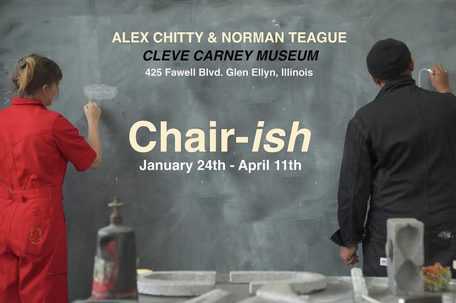

Alex Chitty and Norman Teague: Chair-ish
The Cleve Carney Museum of Art will present Chair-ish, an exhibition of Chicago-based artists Alex Chitty and Norman Teague, opening in January 2026. Working together for the first time, in this exhibition Chitty and Teague explore material, memory, and spatial dialogue through distinct yet complementary practices. Both Chitty’s sculptural investigations and Teague’s work disrupt perception and gesture toward the poetic in the everyday; drawing on vernacular design, cultural heritage, and the social histories embedded in form. The artists will examine the intimacy of the objects we interact with daily and the installation will echo their sentimentality with artworks that feel at once new and familiar.
This pairing presents a conversation between two approaches to object-making that are both deeply grounded in process and open to reinterpretation. The exhibition invites viewers to consider how materials can hold personal and collective meaning, and how space can be used as a site for inquiry, assembly, and reimagining. Together, their works occupy the museum like echoes not in opposition, but in soft dialogue. What emerges is a parallel consideration of structure, memory, and the body in space. Their shared attention to material integrity and the unspoken knowledge of making, reminds us that form can hold meaning beyond language.